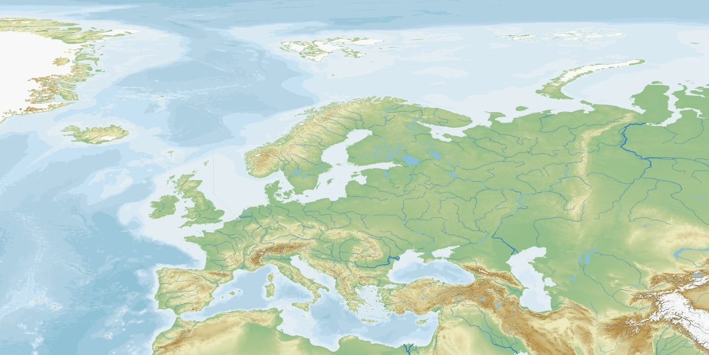

Instructions : Clique sur les points colorés de la carte pour découvrir les montagnes (en vert) et les fleuves (en bleu) de l'Europe.

Clique sur un point de la carte pour afficher sa fiche d'informations.
💡 Rappel sur l'embouchure d'un fleuve :
L'embouchure est le lieu où un fleuve se jette dans la mer, un océan ou un lac. Plusieurs fleuves différents peuvent se jeter dans la même mer (par exemple, le Rhin, l'Elbe et la Tamise se jettent tous dans la mer du Nord).
Instructions : Glisse chaque étiquette d'embouchure (mer ou océan) dans la case correspondant au fleuve. Les étiquettes peuvent être réutilisées plusieurs fois !
Embouchures à faire glisser
| Fleuve d'Europe | Son embouchure (Mer / Océan) |
|---|
Ton résultat
0 / 14